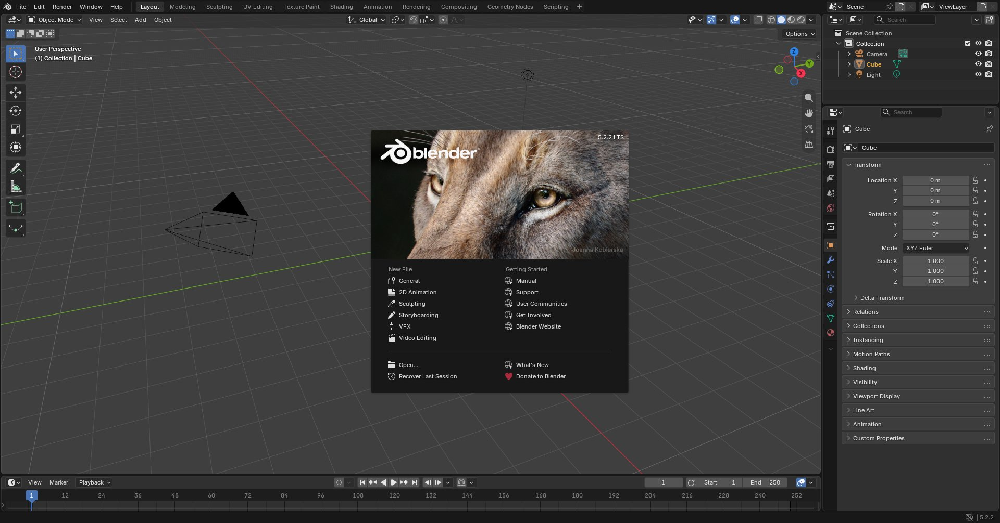
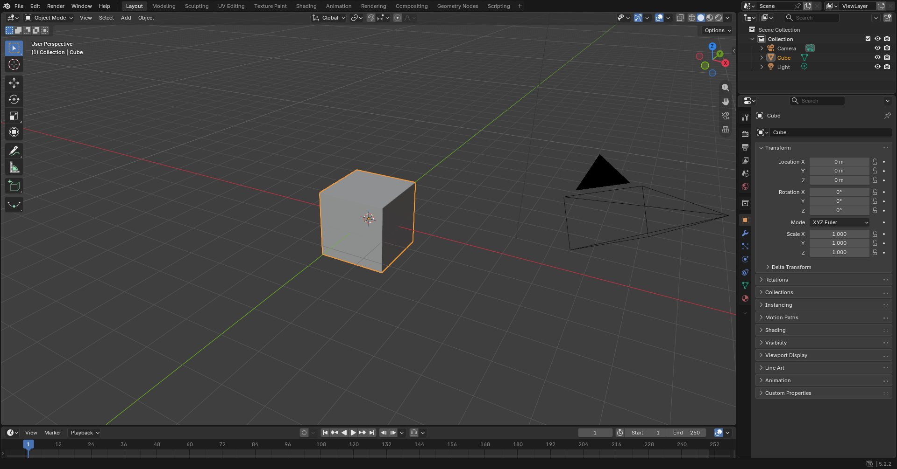

Blender: перші кроки
Unity 3D · урок 4 «Введення в 3D-моделювання. Базові функції» · Blender 5.2
Як дивитися відео. Відео грає без зупинок; Пробіл — пауза, ← / → — крок назад / вперед, швидкість 0.5–1.5×. Хочеш, щоб воно чекало на тебе після кожного кроку, — постав галочку «зупинятися після кроку».
Далі — кнопка «Далі ▶» або Пробіл. ← / → — попередній / наступний крок, R — показати крок ще раз.
Можна натиснути на будь-який крок у списку під відео. Жовтим унизу відео — клавіші, які треба натиснути, а миша показує, яку кнопку тиснути.
1Новий файл і вікно Blender


Клавіші працюють там, де стоїть миша. Тримай курсор над 3D-видом, коли натискаєш G, E, Tab…
2Навігація і режими
3Головні клавіші
| Клавіша | Що робить | Приклад |
|---|---|---|
| Tab | увійти / вийти з режиму редагування | |
| 1 2 3 | вершини · ребра · грані | |
| G | Grab — пересунути | G Z 1 Enter — на 1 м угору |
| R | Rotate — повернути | R Z 45 Enter |
| S | Scale — змінити розмір | S 0.5 Enter — удвічі менше |
| E | Extrude — видавити нову частину | E 1 Enter |
| E ПКМ S | нове кільце / рамка всередині грані: видавити на місці і зменшити (або збільшити) | E ПКМ S 0.7 Enter, потім E — новий ярус |
| Alt+E | меню видавлювання; Extrude Individual Faces — кожна грань у свій бік на однакову відстань | Alt+E → Individual Faces → 0.2 Enter |
| X Y Z | після G / R / S — тільки вздовж цієї осі; з Shift — усі осі, крім неї | S Shift+Z |
| Ctrl+R | розріз-петля; колесом миші — кількість розрізів, ЛКМ — підтвердити, ПКМ — лишити посередині | |
| A | виділити все | |
| Shift+ЛКМ | додати до виділення | |
| Shift+Alt+ЛКМ | виділити цілу петлю (по периметру) | |
| Shift+A · X | додати фігуру · видалити | |
| Ctrl+Z · Ctrl+S | скасувати · зберегти |
Число можна не вводити — просто веди мишею і клацни ЛКМ. Передумав — ПКМ або Esc.
4Завдання з куба
Ніжки стільця «склеїлися» в одну — розрізи ще не розсунуті або виділено не 4 кути. Ctrl+Z і виділи тільки кутові квадратики.
5Завдання з циліндра
Грані через одну (зубці колеса, ребра ракети): клацни ЛКМ по першій боковій грані, далі Shift+ЛКМ — через одну. Коли грані з цього боку скінчаться, поверни вид колесом миші й продовжуй. Потім Alt+E → Extrude Individual Faces і число — кожна грань висунеться у свій бік на однакову відстань.
Швидше (для тих, хто впорався): виділи всю петлю Shift+Alt+ЛКМ → меню Select › Checker Deselect.
Швидше (для тих, хто впорався): виділи всю петлю Shift+Alt+ЛКМ → меню Select › Checker Deselect.
6Завдання з конуса
Не забудь зберегти: Ctrl+S → файл, наприклад
chair.blend, у свою папку. Кожну фігуру — окремим файлом.Для вчителя: файли для презентації
Кожен крок окремим відео — video/<вправа>-NN.mp4 (наприклад chair-03.mp4 — розріз Ctrl+R). На відміну від GIF, відео в Google Slides можна зупиняти й перемотувати: завантаж файл на Диск, потім у презентації Вставити → Відео → Google Диск.
Усі вправи підряд: lesson04-all.mp4. Цілі вправи: intro · tools · column · chair · monitor · cake · wheel · pipe · top · tree · rocket.
Кадри знято скриптом у Blender 5.2 (заводські налаштування); клавіші й мишу намальовано в самому Blender. Джерела: _work/b04/anim.py, build_videos.py.